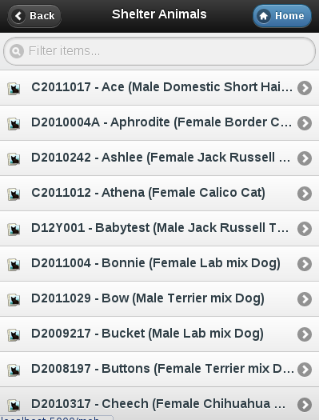
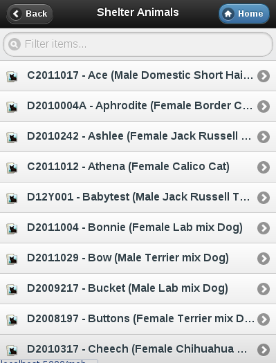

Mobile Interface¶
In addition to the web interface, ASM has a special user interface for mobile devices, such as your iPhone or Android handset.
To access this interface, follow the “Mobile Interface” link under the user menu.

The Mobile interface is task focused and allows you to perform the following tasks:
Read system messages.
Quickly find and view the records of animals in care.
Use your camera to upload photos and scan documents as PDFs for animals in care.
Mark vaccinations given.
Mark tests performed and record the result.
Mark medical treatments administered.
Add logs to animals, incidents and people.
View open incidents and those assigned to you.
Dispatch, respond to and complete incidents that have been assigned to you.
Mark diary notes complete that have been assigned to you.
Find and view people records.
Find and check animal licenses
Perform stock takes on stock locations.

 
